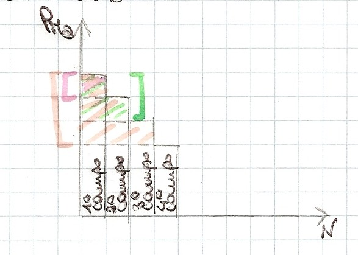
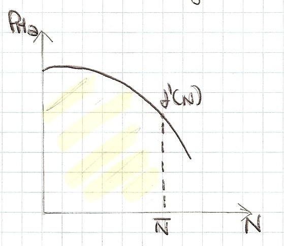
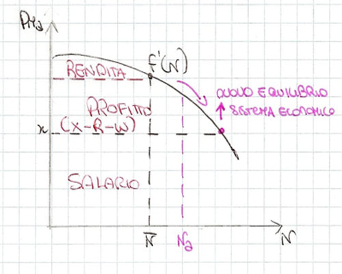

Torna alla pagina di Economia del Cambiamento Tecnologico
:: Economia del Cambiamento Tecnologico ::
Lezione 31/10/2008
Modello ad un settore produttivo [NOTA: è un modello di analisi di crescita economica basata sull'accumulazione di capitale.]
E' il primo modello usato da Ricardo.
Questo modello:
- descrive i processi produttivi
- descrive la distribuzione della nuova ricchezza prodotta (Valore Aggiunto o chiamato dai classici sovrappiù)
Partiamo da 3 ipotesi:
1. Supponiamo di produrre un solo bene, ad esempio i grano, e diamogli variabile X.
2. La popolazione che produce il grano sarà la variabile N (per semplificare ipotizzo che TUTTI lavorino).
3. Ogni persona lavori in una porzione di campo diversa da un altro.
Prima equazione
X=f(N)
Questa funzione soddisfa alcune proprietà:
a. f(N)>=0 perchè la produzione non può essere negativa
b. f'(1)>= x¯ (x soprassegnato): significa che la produzione del primo occupato è sicuramente superiore al salario minimo di sopravvivenza dato a lui (attenzione: il salario non deve mai superare il minimo per garantire la distribuzione di nuova ricchezza tra le 3 classi sociali)
c. f''(N) <0: la funzione di produzione è caratterizzata da rendimenti marginali decrescenti, fin dalle prime unità di fattore produttivo. Inoltre un buon imprenditore dovrebbe usare il terreno che ha la redditività più alta e via via scalando perchè ogni terreno ha fertilità diversa.

Seconda equazione
R = X - N*f'(N)
Cosa significa?
Questa è l'equazione della RENDITA. La rendita è la somma degli eccessi di produzione dei campi messi a dimora rispetto all'ultimo campo coltivato (ossia quello meno fertile).
Vediamo con un esempio grafico.

Per fare in modo che il quarto campo (quello meno fertile) venga coltivato è necessario che offra all'imprenditore un saggio di profitto esattamente uguale al saggio di profitto che ottengono gli imprenditori che coltivano i primi 3 campi. L'eccedenza di produzione del primo campo rispetto al quarto viene preso da terzi, cioè il proprietario.
Cosa indicano le variabili?
- X = produzione totale di grano
- N = n. persone o n. campi coltivati totale
- f'(N) = derivata prima (PMa)
Facendo questa operazione, siccome sono nel continuo, è come se moltiplicassi la base dei rettangoli(rappresentata da N) per l'altezza dell'ultimo rettangolo (rappresentato da PMa, ossia f'(N) e il risultato lo togliessi al prodotto totale, X).
Vediamo nel grafico.


Terza equazione
W = Nx
Questa è l'equazione del MONTE SALARI cioè del totale dei salari che devo ai lavoratori.
Le variabili sono:
- N = cioè tutti i lavoratori
- x = salario unitario reale -> perchè reale? perchè dobbiamo ricordarci che siamo in un'economia dove non si sono i prezzi
E questa è abbastanza semplice.
Quarta equazione
K = W
Dove K sta per capitale circolante. Il pensiero dominante all'epoca infatti prevedeva che ci fosse solo capitale circolante e che questo venga interamente utilizzato per pagare i salari, cioè da qui doveva recuperare il "grano" per pagare i lavoratori.
Quinta equazione
P = X - R - W
E qui per P si intende il profitto. Questa è l'ultima equazione del sistema, quella che mi permette di conoscere la quantità di grano che rimane agli imprenditori (proprietari terrieri) per reinvestire. Mostra perciò gli effetti della politica economica.
Sistema
Perciò riprendiamo tutte le nostre belle equazioni per farne un sistema:
- X = f(N)
- R = X - N*f'(N)
- W = Nx
- K = W
- P = X - R - W
Ci troviamo perciò con un sistema a 5 equazioni e 7 incognite (X, N, R, W, x, K, P): per risolverlo dobbiamo fare in modo che il sistema abbia al suo interno un numero di equazioni pari alle incognite, per creare equilibrio nel sistema. Come fare? Faccio in modo che due variabili vengano assunte come date introducendo due nuove equazioni nel sistema. Ricardo individua come date: K e N. Perciò:
- K = K(dato) => capitale visto come variabile esogena
- N = N(dato) => la popolazione è una variabile esogena al sistema economico, cioè il numero dei residenti non è influenzato dall'economia (per intenderci l'emigrazione secondo Ricardo non è data dalla povertà)
In un qualunque sistema economico questo non è possibile, dice Malthus, la popolazione non può seguire traiettorie autonome all'economia. Allora al posto dell'ultima equazione viene introdotta un'altra equazione che mi dà una variabile come data:
- x = x(dato) => dove per "dato" si intende un salario pari al livello minimo di sussistenza. Perchè?
- se x > sussistenza -> N, la popolazione, cresce e devo continuamente far crescere il salario per adeguarmi, ho meno profitto, cerco di coltivare di più ecc..
- se x < sussistenza -> N diminuisce e non avrei più lavoratori perciò cala la rendita
In queste due situazioni ci sono elementi di instabilità, perciò il sistema non converge al punto che voglio io, ma converge a un altro punto.
Esempio
Vediamo in dettaglio come prendendo un esempio: al termine di un dato periodo il prodotto X è distribuito tra i proprietari terrieri (R) i lavoratori (W) e gli imprenditori (P). Si possono verificare due casi:
1. l'imprenditore consuma interamente P. Il sistema socio-economico riprende con produzione, scambio, consumo esattamente come nel periodo precedente -> tutti sono felici tranne i poveri disgraziati che si spaccano la schiena per un tocco di fame.
2. l'imprenditore accumula al capitale K una parte di P.
Se una parte di P viene accumulata, K (il capitale circolante) aumenta, quindi ci sono maggiori risorse da assegnare ai lavoratori [K=W]
Se nel primo periodo successivo all'accumulazione la popolazione rimane costante, dall'equazione 3 [W = Nx] si evince che il salario reale aumenta; di conseguenza un aumento del salario fa aumentare la popolazione; maggiore popolazione fa aumentare la domanda di generi alimentari; questa domanda si soddisfa coltivando nuovi campi. Ne va da sè che i nuovi campi avranno fertilità minore di quella dei campi già in uso, stando al modello Ricardiano, perciò i profitti diminuiscono.
Vediamo in un grafico:

L'accumulazione di K con risparmio di profitti P continua fino al punto in cui i P si annullano, fino al punto in cui poi i salari sono ancora al minimo reale. Questa è definita economia triste perchè non c'è convenienza per gli imprenditori ad accumulare.
Torna alla pagina di Economia del Cambiamento Tecnologico